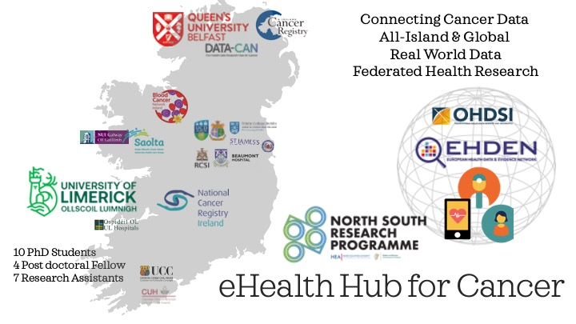

About
The eHealthHub for Cancer is an all-island emerging hub of excellence funded by the Irish Higher Education Authority HEA Shared Island North-South Research Programme The eHealthHub for Cancer is lead by UL and QUB and partners with clinical and academic researchers in UCD, RCSI, UG, UCC.
Motivation
Cancer is the leading cause of death on the island of Ireland. Half of all citizens will experience cancer at some stage in their lifetime. Annually, more than 40,000 and 10,000 people are diagnosed with cancer in Ireland (IRE) and Northern Ireland (NI) respectively. With an aging demographic, the population >65 years is estimated to more than double in the next 25 years National Cancer Strategy 2017-2026 A Cancer Strategy for Northern Ireland 2021-2031
Cancer is identified as a priority for increased cross-border collaboration, particularly with the reinvigoration of the Ireland-Northern Ireland-US National Cancer Institute Memorandum of Understanding The National Cancer Strategy (2017-2026)identified an urgent need for frameworks that increase Findable, Accessible, Interoperable and Reusable (FAIR) sharing of health data and stated it was a major obstacle to measuring performance and evidence-based policy decision. QUB PI Prof Lawler, Scientific Director of DATA-CAN the UK’s Health Data Research Hub for Cancer, together with the Northern Ireland Cancer Registry highlighted the lack of a connected IRE national health informatics system as a major obstacle to cross-border research on the impacts of COVID-19 on cancer [1].
Interoperability in Health Care Data
The Observational Medical Outcomes Partnership (OMOP) Common Data Model (CDM) enables the capture of information (e.g., encounters, patients, providers, diagnoses, drugs, measurements and procedures) in the same way across different institutions. This can assist organization overcome traditional challenges when comparing health data across systems. Traditionally healthcare organizations have stored a wealth of data, in a various formats for a myriad of different purposes without any coordination or standardization and healthcare system may use different names for a data field (such as systolic blood pressure or blood glucose level) making it difficult to compare data between systems. The purpose of a common data model (CDM) is to standardize the format and content of observational data so that standardized applications, tools and methods can be applied across different datasets. Use of a CDM integrates medical records across healthcare organizations so that these data resources can be queried to answer important questions quickly and efficiently.
The Observational Medical Outcomes Partnership (OMOP) is a public-private collaboration chaired by the US FDA, who proposed a common data model (CDM) [2] for storing and harmonizing heterogeneous health data. OMOP-CDM is maintained by OHDSI The European Medicines Agency (EMA) has recommended OMOP-CDM as a gold standard for harmonization of records; The European Health Data and Evidence Network (EHDEN) aims to harmonize >400 million diverse health records from 23 EU countries, using OMOP-CDM [3].
An advantage of OMOP-CDM is deployment of a federated model and GDPR compliance. Data remain locally and each local health data provider can control access to their data. Only aggregated results of queries are exported from each local site (Figure 1), preserving patient privacy/security.
OHDSI and EHDEN projects are making healthcare data FAIR at an unprecedented scale, creating new research and economic opportunities in eHealth. To date, >810,000,000 patient records (approximately 11% of the global population) from 34 different countries have been mapped to OMOP-CDM, including records from All of Us, UK BioBank, eMERGE, the National COVID-19 Cohort Collaborative (N3C), and the national data network in Korea. Lead PI Culhane is a member of the OHDSI community, and has published high-impact publications with OHDSI [4–6], including the study of the safety profile of hydroxychloroquine in nearly 1 million patients, whose findings informed public health guidance from the EMA. Despite vast benefits to patients, design and monitoring of clinical trials, cross-border eHealth research, and the benefits of participation in international EU and Global research, there is a critical skill shortage in ehealth research on the island of Ireland. IRE is not a data partner in EHDEN and there are no IRE or NI SMEs that are certified by EHDEN.
The eHealth-Hub for Cancer
This proposal will establish a multidisciplinary all-Island framework for federated cancer eHealth research using OMOP-CDM, build skills and capacity for real-world data analysis, such that Ireland and NI can prosper in EU and global eHealth cancer research and improve patient quality-of-care. Furthermore, we will demonstrate harmonising all-island cancer data is beneficial and impactful to cancer research and cross-border collaboration. It will enable research on cross-border studies on cancer and the impact of COVID-19 on cancer, that inform public policy.

eHealth
eHealth is a key pillar in health care reform, prioritized in Programme for Government, Sláintecare, and the Project Ireland 2040 National Development Plan and the eHealth strategy for Ireland. The Organisation of European Cancer Institutes (OECI) have highlighted a need for systems to digitize and harmonize patient data. eHealth initiatives are integral to European Commission EU4Health (2021-2027), Europe’s Beating Cancer Plan and Horizon Europe Conquering Cancer: Mission Possible (2021-27). This proposal also addresses United Nations SDGs 3 (Health and well being).